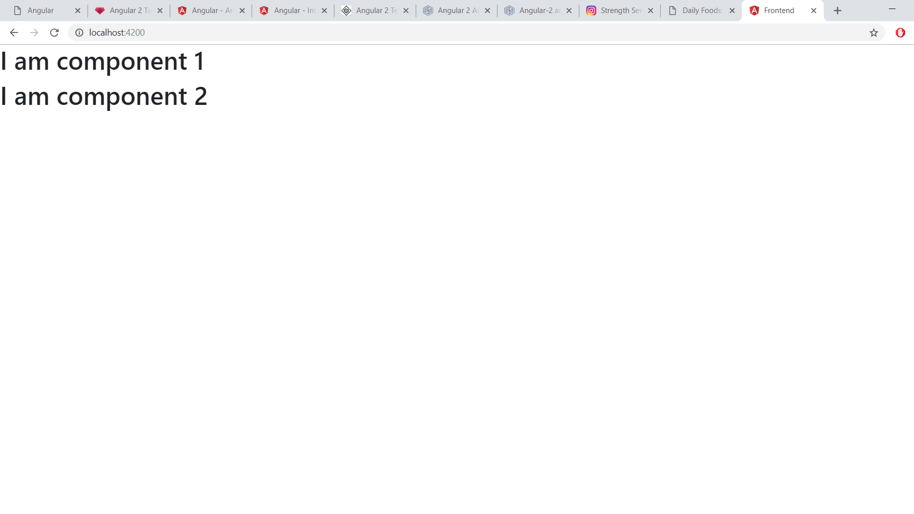

Η Angular είναι μια πλατφόρμα, framework για τη δημιουργία client εφαρμογών, χρησιμοποιώντας HTML και TypeScript. Είναι γραμμένη σε TypeScript. Παρέχει τις βασικές και προαιρετικές λειτουργίες, ως ένα σύνολο από βιβλιοθήκες TypeScript, τις οποίες μπορούμε να εισάγουμε στις εφαρμογές.
Modules
Μια Angular εφαρμογή αποτελείται από NgModules. Ένα module είναι ένα συνεκτικό τμήμα κώδικα, το οποίο παρέχει ένα compilation context για τα components και πραγματοποιεί μια συγκεκριμένη λειτουργία. Κάθε εφαρμογή έχει ένα root module, που λέγεται AppModule, το οποίο παρέχει το μηχανισμό εκκίνησης της εφαρμογής.
Όπως και με τα Javascript modules, μπορούμε να κάνουμε import λειτουργικότητα από άλλα NgModules. Για παράδειγμα, για χρησιμοποιήσουμε την υπηρεσία router στην εφαρμογή, πρέπει να κάνουμε import το router NgModule. Παρακάτω, δίνεται ο κώδικας :
import { NgModule } from '@angular/core';
import { BrowserModule } from '@angular/platform-browser';
import { AppRoutingModule } from './app-routing.module';
@NgModule({
imports: [ BrowserModule, AppRoutingModule ],
providers: [ Logger ],
declarations: [ AppComponent ],
bootstrap: [ AppComponent ]
})
export class AppModule { }
Components
Component είναι μια κλάση με το decorator @Component και ελέγχει ένα κομμάτι της οθόνης, το οποίο λέγεται view. Η κλάση περιέχει τα δεδομένα, λογική της εφαρμογής και είναι συσχετισμένη με ένα HTML template.
Κάθε Angular εφαρμογή έχει τουλάχιστον ένα component, το οποίο λέγεται root component. Αυτό μπορεί, να περιέχει και άλλα components, τα οποία λέγονται child components.
import { Component } from '@angular/core';
@Component({
selector: 'app-root',
template: '<h1>Hello {{title}}</h1>'
})
export class AppComponent {
title = "World";
}
Τo property template ορίζει την HTML, η οποία θα πρέπει, να γίνεται render, όταν χρησιμοποιείται το component και το property selector
λέει στην Angular, που ακριβώς στο DOM, πρέπει να κάνει render το component. Παραπάνω, όταν γίνει render το AppComponent, θα εμφανίσει στην
οθόνη ένα element h1, με κείμενο Hello World.
Templates
Ένα template είναι μια μορφή HTML, η οποία λέει στην Angular, πως να κάνει render το component. Μοιάζει με HTMl, αλλά περιέχει και Angular template σύνταξη, η οποία μεταβάλλει την HTML, βασισμένη στη λογική και την κατάσταση της εφαρμογής. Παρακάτω, το AppComponent περιέχει δύο child compopnents, to Component1Component και το Component2Component. Δίνεται το αποτέλεσμα της εκτέλεσης στην εικόνα.
import { Component } from '@angular/core';
@Component({
selector: 'component1',
template: '<h1>I am component 1</h1>'
})
export class Component1Component {}
import { Component } from '@angular/core';
@Component({
selector: 'component2',
template: '<h1>I am component 2</h1>'
})
export class Component2Component {}
import { Component } from '@angular/core';
@Component({
selector: 'app-root',
template: '<component1></component1>'+'
'<component2></component2>'
})
export class AppComponent {}
